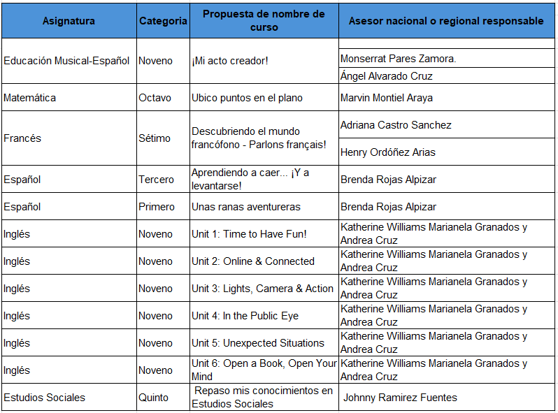
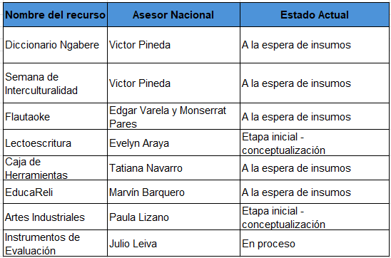

Gestión de recursos y cursos
¿Cómo gestionar un recurso con GESPRO?
- Analice la información ofrecida en este sitio.
- Defina la prioridad de desarrollo de recurso según la necesidad.
- Analice y explore que opciones se muestra en la web sobre su prioridad.
- Detalle un listado de recursos ofrecidos en la web que colaboren con su prioridad.
- Establezca la idea de su recurso.
- Indique la población, el objetivo, nivel y temática curricular.
- Visualice su recurso, anote su idea y su propósito.
- Recopile los insumos que requiere para su recurso.
- Envíe un correo a la jefatura de GESPRO rosa.chacon.coto@mep.go.cr con copia patricia.hernandez.conejo@mep.go.cr solicitando el recurso.
- Una vez que se analice su solicitud el equipo de producción se comunicará con usted.
¿Cuánto tarda la producción de un recurso en GESPRO?
Depende de varios aspectos
- Prioridad establecida en el departamento.
- Claridad de la solicitud.
- Insumos ofrecidos.
- Tiempo de respuesta de los asesores.
¿Cuáles son las funciones del asesor de asignatura?
- Valorar y definir los recursos digitales para el aprendizaje acordes con el plan de estudio vigente, si son pertinentes y relevantes.
- Conceptualización y desarrollo de contenidos, establecer las características pedagógicas. Acá se requiere que el Asesor Nacional supervise y verifique el abordaje pedagógico y la pertinencia de los contenidos.
- Ofrecer el acompañamiento durante la producción para avalar el recurso según el abordaje pedagógico
- Aprobación del producto final.
¿Cuáles son las etapas para desarrollar un recursos con GESPRO ?

¿Cuáles son las etapas para hacer un curso en Aprendo Pura vida -Learning Passport?

¿Cuáles son los cursos que actualmente se están desarrollando en Aprendo Pura Vida - Learning Passport?

¿Cuáles son los recursos que actualmente están en desarrollo en GESPRO?

¿Qué tipo de recurso se puede hacer con GESPRO?
Se comparte colección de recursos GESPRO para que puedan visualizar algunos ejemplos de recursos elaborados por el equipo GESPRO, esto con el fin de que se tengan algunas referencias de cosas que se pueden desarrollar en del departamento.
https://recursos.mep.go.cr/2021/coleccion_gespro/